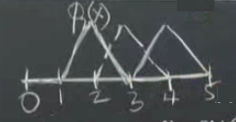
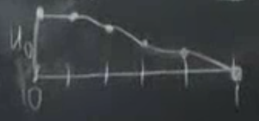

Üzerinden geçelim, sistem zayıf form ile ise başlar. Önceki dersin sonunda Galerkin fikrini tanıştırdık, sürekli diferansiyel denklem yerine onu ayrıksal temsil etmeye uğraş. Galerkin bunun için bazı deneme fonsiyonları kullanır onlara $\phi_1,...,\phi_N$ diyelim, ayrıca test fonksiyonları da vardır (çoğunlukla test fonksiyonları ile deneme, yani $\phi$ ve $v$ fonksiyonları aynıdır). Bugün işleyeceğimiz bu fonksiyonların nasıl seçildiği ve hazirlik asamasini gosterdikten sonra bunun verdigi $KU = F$ denklemin nasil cozuldugu. $K$ nereden geliyor, $F$ nereden geliyor? $F$ bir sekilde alttaki ikinci denklemin (oktan sonra) sag tarafindan geliyor, $K$ ise sol tarafindan.. Detaylari simdi gorecegiz.
$$ - \frac{\mathrm{d}}{\mathrm{d} x} \left( c(x) \frac{\mathrm{d} u}{\mathrm{d} x} \right) = f(x) \to \int _{0}^{1} c \frac{\mathrm{d} u}{\mathrm{d} x} \frac{\mathrm{d} v}{\mathrm{d} x} \mathrm{d} x = \int _{0}^{1} f(x) v(x) \mathrm{d} x $$
ki eger $u(1)=0$ ise $v(1) = 0$ (sinir sarti).
Sonlu ogeler metotunun (FEM) temeli $KU = F$. Ustteki denklemde okun sol tarafi diferansiyel denklemimiz, sinir sartlari vs ile "guclu formda", oktan sonrasi zayif form, ki onun da kendi sinir sartlari var. Sabit degiskenler guclu formdan zayif forma geciyor, ama serbest degiskenler gecmiyor. $v$'yi $u$'dan olan ufak sapmalar olarak gordugum icin eger $u$'yi sabitliyorsam $v$ de sabitleniyor.
Tum bunlari gorduk ama hala ayaklarimiz yere basmadi; bir cok fikirden bahsettik, ama simdi daha gercek dunyaya baglanacagiz. Gercek dunya demek tabii $\phi$'lerle alakali, hangi somut fonksiyonlari $\phi$ olarak sececegiz?
Acaba ornek bir $\phi$ ne olabilir? Mesela $x=2$ noktasinda tepe yapan bir parcali lineer fonksiyon kullanabilirim,

Bu fonksiyona $\phi_2(x)$ diyelim, 1 ila 3 arasinda 2 uzerinde tepe yapiyor diger yerlerde ya lineer egimi var, ya da degeri sifir. Her $\phi$ maksimum tepe noktasi 1 olarak secilabilir. Onun sagindaki $\phi_3$ olabilir, benzer bir fonksiyon sadece 3 degeri bazli tanimli. Buradaki ana amac sistemi basit ogeler uzerinde insa etmek. FEM'in ana fikri budur; $\phi$ icin basit fonksiyonlar kullan. Bu basitligin devami olarak $\phi$ ve $v$ fonksiyonlarini ayni sec.
Peki sinir noktalarinda ne olacak? Ustte serbest-sabit problemi cozecegim, sol uc nokta serbest, sag uc nokta sabit (sinir tanimlanmis).
Ustteki resme bakarsak, $x=0$ icin bir "yarim sapka" fonksiyonu tanimladim, $\phi_0$ diyelim, ve eger diger ucgen fonksiyonlara tam sapka dersek bu da yarim sapka. O noktada $\phi$ ve $v$'lerim kisitli degiller. Boylece elimde bes tane deneme fonksiyonu oluyor, $\phi_0$, $\phi_1$, $\phi_2$, $\phi_3$, $\phi_4$.
Amac nedir? Yaklasik FEM cozumum $U(x)$'in ustteki basit sapka fonksiyonlarinin bir kombinasyonu olmasini istiyorum.
$$ U(x) = U_0 \phi_0(x) + ... + U_4 \phi_4(x) $$
$U_0,..,U_4$ degerleri skalar, tek sayi.. onlar ilk basta bilinmeyen "agirlik" degerleri, $\phi$'leri belli sekilde carpacaklar ve bu carpimlarin toplami yaklasik bir $u$ olacak.
Bu kombinasyonlar neye benzerdi acaba?

Baslangictaki deger niye $u_0$? Cunku orada tum diger $\phi$ fonksiyonlari sifir seviyesinde, hemen yandaki $\phi_1$ bile orada sifir ve maksimum $\phi$ deger 1 oldugu icin baslangic degeri $u_0$.
Bu arada Galerkin, ismini tasiyan yontemi bulurken, aklinda erismeye ugrastigi belli bir cozum fonksiyonu vardi, ve sapka fonksiyonlarini oraya varmak icin secmisti fakat modern FEM yaklasimlarinda, yazilimlarinda bir temel fonksiyonu ilk bastan seceriz, problem hakkinda bir sey bilmesek bile. Sapka fonksiyonlari bu fonksiyonlardan biridir.
Sonlu ogeler temel fonksiyonlari dugum noktalariyla baglantilidir, bu baglamda sonlu farklilikler (finite differences) metotuna benzer (tabii FD ile esit aralikla bolmek gerekir, FEM ile bu zorunluluk yok), ogeler dugum noktalarina oturtuluyor. FEM ile sapka fonksiyonu ozelinde her dugum noktasindaki $u$ degerinin o noktadaki agirlik degeri ile ayni olmasini zorlamis oluyoruz; mesela 1 dugumundeki deger nedir? $u_1$! Cunku orada diger tum sapka fonksiyonlari sifirdir, sadece $\phi_1$ degeri 1, toplanan tum terimler yokoluyor geriye sadece $u_1 \phi_1 = u_1$ kaliyor.
FD benzerligi hakkinda, $KU=F$'i olusturdugumuzda onun bir FD denklemine oldukca benzedigini gorecegiz, arada yapisal farklar var tabii, FD ile ayriksal denklemleri biz tanimliyoruz, FEM ile sadece baz ogeleri seciyoruz denklemin ne oldugunu Galerkin yontemi bize soyluyor.
[devam edecek]